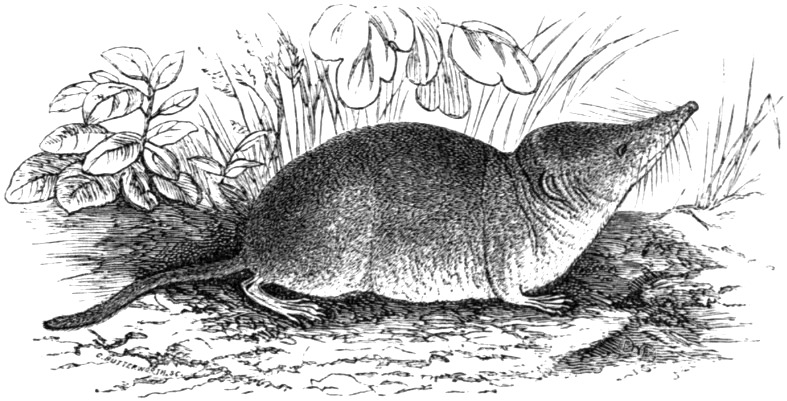

VIDEO COMPRESSOR FOR macOS · WINDOWS · LINUX
Common
Shrew
Shrinks videos to a target size – tuned to Vimeo's upload specs.

Sorex araneus – shrinks to survive winterup to −20 %
Illustration: C. Butterworth, Encyclopædia Britannica, 9th ed., vol. XXI (1886)
Public domain · via Wikimedia Commons (EB9_Shrew.jpg)